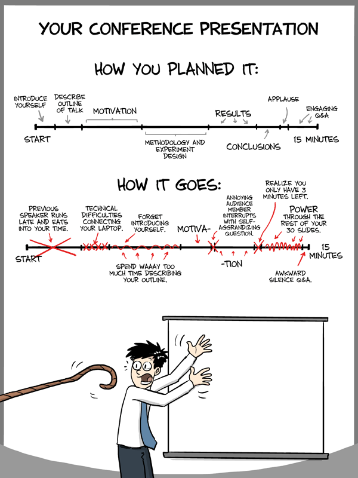

Project Presentations

The Idea Presentation Memo You have between five and ten minutes to present your project idea. The ideal is closer to five than to ten minutes. See the margin notes for suggested "weights".
2 minutes
Some of you may wish to explain the language concepts as "our L is like (some existing language) LL but does not support X and Y from LL; instead it provides U and V." This is especially true if you imagine reusing LL to build L.
the purpose of your language (as implemented and running),
a demo of a couple of sample programs in your language,
a look at the user documentation,
two interesting (as in error-prone) pieces of code, and
the missing pieces (or what you would like to accomplish before the end of the semester).
The entire presentation, including interactions with the audience should take about 40 minutes. If you do not switch on your own, I will switch presenters at random points in the middle of your presentation to ensure that both understand the entire range of material.
This time I will leave the time allocation to you. Imagine yourself presenting the solution for a niche problem to a team of generally knowledgeable colleagues in a company, but these colleagues (other than your manage) do not know what you have been up to for a few weeksa. If there is time left, all of us will inspect additional pieces of your implementation.
Preparing your presentation You will deliver the presentation on one of your own laptops. Please check that you can connect to the overhead projector in the classroom at least a day before. You may even wish to practice the talk there.